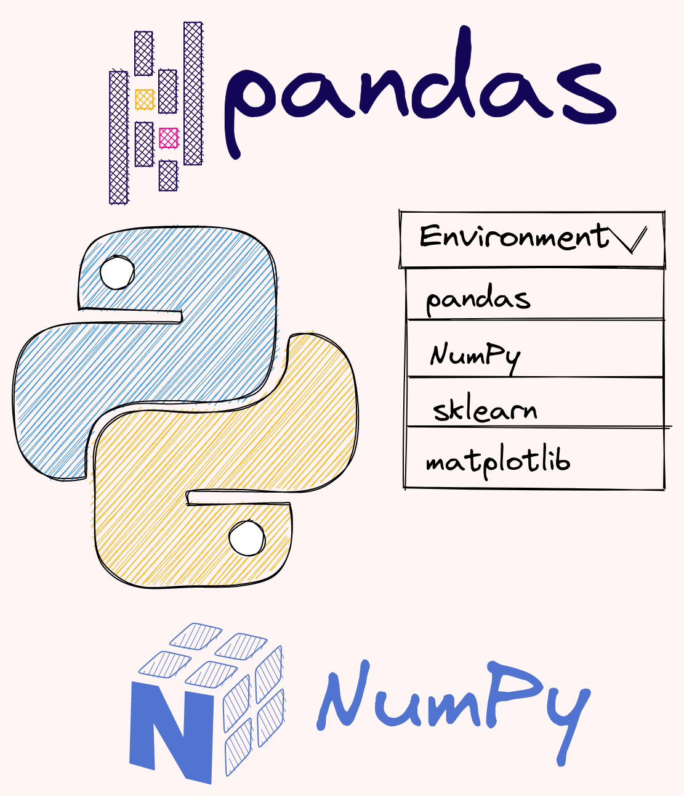
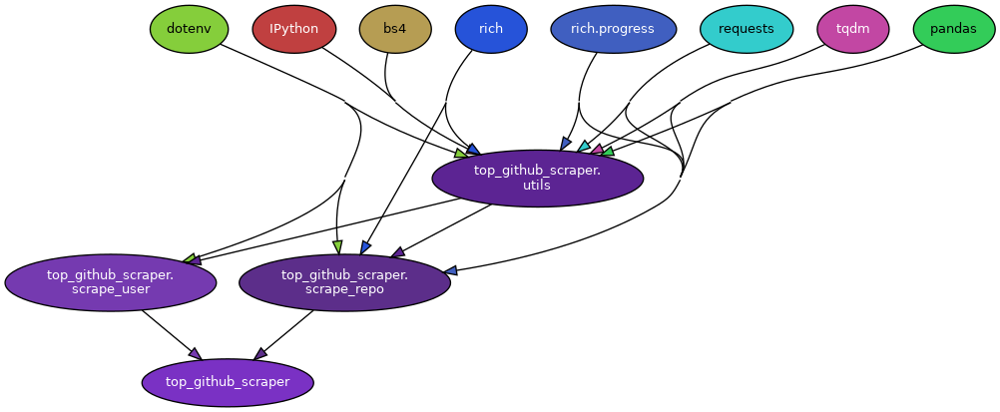

7.8. Environment Management#

7.8.1. virtualenv-clone: Create a Copy of a Virtual Environment#
Sometimes you might want to use the same virtual environment for 2 different directories. If you want to create a copy of a virtual environment, use virtualenv-clone.
The code below shows how to use virtualenv-clone.
$ pip install virtualenv-clone
$ virtualenv-clone old_venv/ new_venv/
$ source new_venv/bin/activate
7.8.2. pip-autoremove: Remove a Package and Its Unused Dependencies#
When using pip uninstall, you only remove a specific package.
Show code cell content
!pip install -U pandas-profiling[notebook]
$ pip uninstall pandas-profiling[notebook] -y
Wouldn’t it be nice if you can uninstall that package and its unused dependencies? That is when pip-autoremove comes in handy.
Show code cell content
!pip install pip-autoremove
Show code cell content
!pip install -U pandas-profiling[notebook]
$ pip-autoremove pandas-profiling[notebook] -y
Jinja2 3.0.1 is installed but jinja2~=2.11.2 is required
Redoing requirement with just package name...
spacy 3.1.2 is installed but spacy<3.0.0 is required
Redoing requirement with just package name...
markdown-it-py 0.6.2 is installed but markdown-it-py~=1.0 is required
Redoing requirement with just package name...
attrs 21.2.0 is installed but attrs<21,>=19 is required
Redoing requirement with just package name...
typer 0.3.2 is installed but typer[all]>=0.4 is required
Redoing requirement with just package name...
fsspec 0.8.7 is installed but fsspec[http]>=2021.8.1 is required
Redoing requirement with just package name...
pandas-profiling 3.1.0 (/home/khuyen/book/venv/lib/python3.8/site-packages)
seaborn 0.11.2 (/home/khuyen/book/venv/lib/python3.8/site-packages)
htmlmin 0.1.12 (/home/khuyen/book/venv/lib/python3.8/site-packages)
phik 0.12.0 (/home/khuyen/book/venv/lib/python3.8/site-packages)
multimethod 1.6 (/home/khuyen/book/venv/lib/python3.8/site-packages)
tangled-up-in-unicode 0.1.0 (/home/khuyen/book/venv/lib/python3.8/site-packages)
visions 0.7.4 (/home/khuyen/book/venv/lib/python3.8/site-packages)
missingno 0.5.0 (/home/khuyen/book/venv/lib/python3.8/site-packages)
Found existing installation: phik 0.12.0
Uninstalling phik-0.12.0:
Successfully uninstalled phik-0.12.0
Found existing installation: multimethod 1.6
Uninstalling multimethod-1.6:
Successfully uninstalled multimethod-1.6
Found existing installation: pandas-profiling 3.1.0
Uninstalling pandas-profiling-3.1.0:
Successfully uninstalled pandas-profiling-3.1.0
Found existing installation: seaborn 0.11.2
Uninstalling seaborn-0.11.2:
Successfully uninstalled seaborn-0.11.2
Found existing installation: tangled-up-in-unicode 0.1.0
Uninstalling tangled-up-in-unicode-0.1.0:
Successfully uninstalled tangled-up-in-unicode-0.1.0
Found existing installation: visions 0.7.4
Uninstalling visions-0.7.4:
Successfully uninstalled visions-0.7.4
Found existing installation: htmlmin 0.1.12
Uninstalling htmlmin-0.1.12:
Successfully uninstalled htmlmin-0.1.12
Found existing installation: missingno 0.5.0
Uninstalling missingno-0.5.0:
Successfully uninstalled missingno-0.5.0
By using pip-autoremove, pandas-profiling and its unused dependencies are removed!
7.8.3. pipreqs: Generate requirements.txt File for Any Project Based on Imports#
Show code cell content
!pip install pipreqs
pip freeze saves all packages in the environment, including ones that you don’t use in your current project. To generate a requirements.txt based on imports, use pipreqs.
For example, to save all packages in your current project to a requirements.txt file, run:
$ pipreqs .
INFO: Successfully saved requirements file in ./requirements.txt
Your requirements.txt should look like below:
numpy==1.21.4
pandas==1.3.4
pyinstrument==4.0.3
typer==0.4.0
Usage of pipreqs:
Usage:
pipreqs [options] [<path>]
Arguments:
<path> The path to the directory containing the application files for which a requirements file
should be generated (defaults to the current working directory)
Options:
--use-local Use ONLY local package info instead of querying PyPI
--pypi-server <url> Use custom PyPi server
--proxy <url> Use Proxy, parameter will be passed to requests library. You can also just set the
environments parameter in your terminal:
$ export HTTP_PROXY="http://10.10.1.10:3128"
$ export HTTPS_PROXY="https://10.10.1.10:1080"
--debug Print debug information
--ignore <dirs>... Ignore extra directories, each separated by a comma
--no-follow-links Do not follow symbolic links in the project
--encoding <charset> Use encoding parameter for file open
--savepath <file> Save the list of requirements in the given file
--print Output the list of requirements in the standard output
--force Overwrite existing requirements.txt
--diff <file> Compare modules in requirements.txt to project imports
--clean <file> Clean up requirements.txt by removing modules that are not imported in project
--mode <scheme> Enables dynamic versioning with <compat>, <gt> or <non-pin> schemes
<compat> | e.g. Flask~=1.1.2
<gt> | e.g. Flask>=1.1.2
<no-pin> | e.g. Flask
7.8.4. pydeps: Python Module Dependency Visualization#
If you want to generate the graph showing the dependencies of your Python modules, try pydeps.
For example, to generate the dependency graph for files in the folder top_github_scraper, I type:
$ pydeps top_github_scraper
The image below is the output of the command:

The folder structure of top_github_scraper looks like the below:
top_github_scraper
├── __init__.py
├── scrape_repo.py
├── scrape_user.py
└── utils.py
7.8.5. Compare Dependencies of Two Requirements Files#
Show code cell content
!pip install compare-requirements
It can be cumbersome to compare the dependencies between two requirements files. Especially when there are a lot of dependencies in each file. To automate the comparison, use compare-requirements.
For example, if your reqs1.txt looks like this:
%%writefile reqs1.txt
numpy==1.19.5
datacommons-pandas==0.0.3
pandas==1.3.3
Writing reqs1.txt
and your reqs2.txt looks like this:
%%writefile reqs2.txt
numpy==1.19.5
datacommons-pandas==0.0.3
pandas==1.3.4
pandas-datareader==0.10.0
Writing reqs2.txt
Running
$ cmpreqs reqs1.txt reqs2.txt
will output:
Different dependencies
======================
Name reqs1.txt reqs2.txt
------ --------- ---------
pandas 1.3.3 1.3.4
Equal dependencies
==================
Name Version
------------------ -------
numpy 1.19.5
datacommons-pandas 0.0.3
Only available on reqs2.txt
===========================
Name Version
----------------- -------
pandas-datareader 0.10.0
Only available on reqs1.txt
===========================
Name Version
---- -------
7.8.6. Poetry: Python Tool for Dependency Management and Packaging#
Have you ever updated a dependency of your project to a new version, and your code suddenly broke? That could be due to the incompatibility of the current dependencies and the new dependency. Wouldn’t it be nice if you can check the compatibility between dependencies before installing new ones? That is when Poetry comes in handy.
To understand how Poetry works, start with initializing Poetry:
$ poetry init
Next, install the latest versions of pandas and NumPy using:
$ poetry add pandas numpy
Using version ^1.4.1 for pandas
Using version ^1.22.2 for numpy
Updating dependencies
Resolving dependencies... (0.3s)
Writing lock file
Package operations: 5 installs, 0 updates, 0 removals
• Installing six (1.16.0): Pending...
• Installing six (1.16.0): Installing...
• Installing six (1.16.0)
• Installing numpy (1.22.2): Pending...
• Installing python-dateutil (2.8.2): Pending...
• Installing pytz (2021.3): Pending...
• Installing pytz (2021.3): Pending...
• Installing python-dateutil (2.8.2): Installing...
• Installing pytz (2021.3): Pending...
• Installing pytz (2021.3): Installing...
• Installing python-dateutil (2.8.2): Installing...
• Installing pytz (2021.3): Installing...
• Installing numpy (1.22.2): Installing...
• Installing python-dateutil (2.8.2): Installing...
• Installing pytz (2021.3): Installing...
• Installing pytz (2021.3): Installing...
• Installing python-dateutil (2.8.2)
• Installing pytz (2021.3): Installing...
• Installing pytz (2021.3)
• Installing python-dateutil (2.8.2)
• Installing pytz (2021.3)
• Installing numpy (1.22.2)
• Installing python-dateutil (2.8.2)
• Installing pytz (2021.3)
• Installing pandas (1.4.1): Pending...
• Installing pandas (1.4.1): Installing...
• Installing pandas (1.4.1)
Now your pyproject.toml file should look like this:
# pyproject.toml
[tool.poetry.dependencies]
python = "^3.8"
pandas = "^1.4.1"
numpy = "^1.22.2"
You decide to use the earlier version of NumPy so you run:
$ poetry add 'numpy<1.18'
Since pandas==1.4.1 requires numpy>=1.18.5, numpy<1.18 is not installed. Thus, you avoid installing dependencies that are not compatible with the current dependencies.
Updating dependencies
Resolving dependencies... (0.1s)
SolverProblemError
Because pandas (1.4.1) depends on numpy (>=1.18.5)
and no versions of pandas match >1.4.1,<2.0.0, pandas (>=1.4.1,<2.0.0) requires numpy (>=1.18.5).
So, because chapter6 depends on both pandas (^1.4.1) and numpy (<1.18), version solving failed.
at ~/.poetry/lib/poetry/puzzle/solver.py:241 in _solve
237│ packages = result.packages
238│ except OverrideNeeded as e:
239│ return self.solve_in_compatibility_mode(e.overrides, use_latest=use_latest)
240│ except SolveFailure as e:
→ 241│ raise SolverProblemError(e)
242│
243│ results = dict(
244│ depth_first_search(
245│ PackageNode(self._package, packages), aggregate_package_nodes
To view what sub-dependencies of a dependency, type:
$ poetry show pandas
name : pandas
version : 1.4.1
description : Powerful data structures for data analysis, time series, and
statistics
dependencies
- numpy >=1.18.5
- numpy >=1.19.2
- numpy >=1.20.0
- numpy >=1.21.0
- python-dateutil >=2.8.1
- pytz >=2020.1
Another cool thing about Poetry is that when you remove a dependency, it also removes sub-dependencies that are no longer needed in your project.
$ poetry remove pandas
Updating dependencies
Resolving dependencies... (0.1s)
Writing lock file
Package operations: 0 installs, 0 updates, 4 removals
• Removing pandas (1.4.1): Pending...
• Removing pandas (1.4.1): Removing...
• Removing pandas (1.4.1)
• Removing python-dateutil (2.8.2): Pending...
• Removing python-dateutil (2.8.2): Removing...
• Removing python-dateutil (2.8.2)
• Removing pytz (2021.3): Pending...
• Removing pytz (2021.3): Removing...
• Removing pytz (2021.3)
• Removing six (1.16.0): Pending...
• Removing six (1.16.0): Removing...
• Removing six (1.16.0)
My full article on how to publish your Python package to PyPI using Poetry
7.8.7. PyInstaller: Bundle a Python Application Into a Single Executable#
Show code cell content
!pip install pyinstaller
To package a Python application along with its dependencies into a single executable, use PyInstaller. With PyInstaller, users can run the packaged app without installing a Python interpreter or any modules.
To see how PyInstaller works, let’s start with creating a main.py script that depends on another Python script and various Python modules.
%%writefile get_data.py
import pandas as pd
import numpy as np
def get_data():
return pd.DataFrame(np.random.randn(10, 2), columns=['A', 'B'])
Writing get_data.py
%%writefile main.py
from get_data import get_data
df = get_data()
print(f'Dataframe:\n{df}')
Overwriting main.py
Next, execute PyInstaller against the main.py script, specifying the onefile option to bundle the application into a single file.
$ pyinstaller main.py --onefile
After the command completes, your directory structure will look like this:
.
├── build/
├── dist/
│ └── main
├── main.spec
├── main.py
└── get_data.py
The “dist/main” file contains all dependencies and executable for your application.
Now, running the “dist/main” file will execute the application.
$ ./dist/main
Dataframe:
A B
0 0.255826 -1.038615
1 -0.850358 0.318558
2 1.255311 0.618789
3 1.434642 0.474813
4 0.676099 1.662942
5 2.314174 -0.142569
6 -0.704812 -0.095609
7 -0.156275 -0.999871
8 0.839902 0.366550
9 -1.818387 -1.512015
You can conveniently share this file with your colleagues, allowing them to run the application without any additional setup or installations.